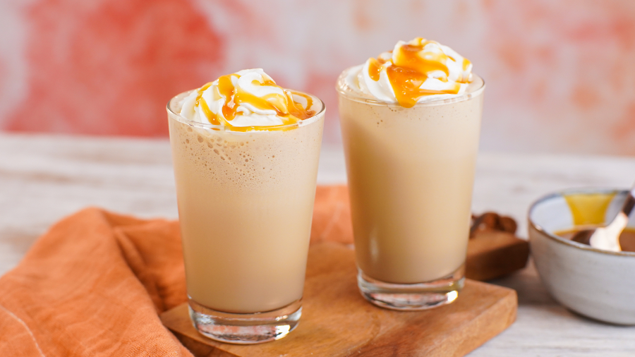

Frappuccino Caseiro

Descrição
Frappuccino é uma marca registrada de bebidas café congeladas vendidas pela cadeia de café Starbucks.
É composto de café ou outro ingrediente básico (por exemplo, creme), misturado com gelo e vários outros ingredientes, coberto com chantilly.
O frappuccino também é vendido como uma bebida de café em garrafas nas lojas e nas máquinas de venda automática.
Tempo de preparo: 10 minutos
Porções: 2 Porções
Nivel:Fácil
Ingredientes
- Leite 300 mls
- Leite em pó 2 colheres (sopa)
- Café solúvel em pó 1 colher (sopa)
- Açúcar 2 colheres (sopa)
- Calda de Caramelo 2 colheres (sopa)
- Chantilly a gosto
Modo de preparo:
- Para essa receita você vai precisar de 9 pedras de gelo.
- No liquidificador coloque o leite, o leite em pó, o café, o açúcar e o gelo.
- Bata bem e coloque rapidamente nos copos.
- Finalize com chantilly e calda de caramelo por cima.
HOME